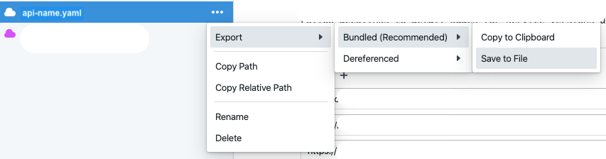
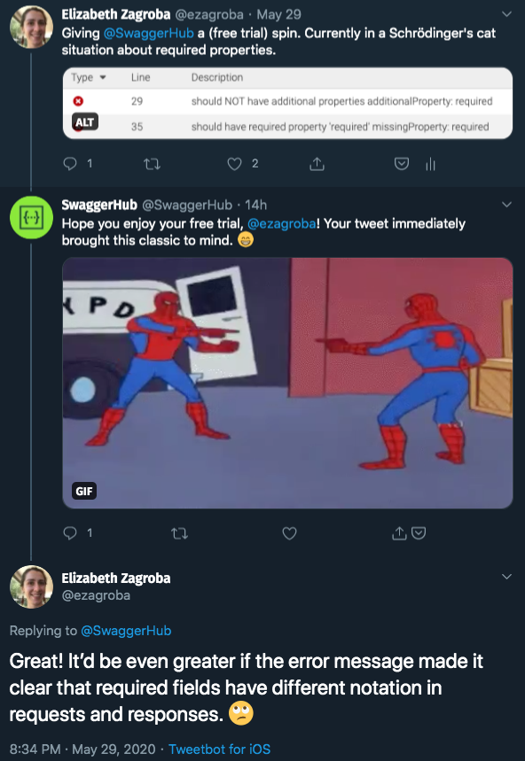
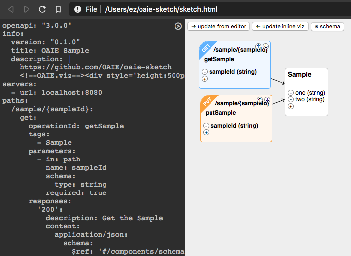

Trying Out Open API Editors
I was editing an Open API with multiple layers of inheritance recently. I kept uncovering errors long after I created them because of the way they display in editor.swagger.io.
This great talk from Lorna Jane Mitchell about Open APIs made me realize how many other tools I could use to edit these specs. There's a whole list at openapi.tools. During my crafting days, I resolved to try some new editors. I decided to see what it was like to edit the existing complicated spec, and write a spec we were missing for a very simple API (two GET calls).
TL;DR
I'm going to use the Visual Studio Code Open API plugin to write and navigate through our specs. We're rendering our specs with editor.swagger.io, so I'm going to keep running it through there to confirm they appear as expected for our stakeholders.
Editors
Spotlight Studio
Lorna mentioned this one in her talk. It's got a web editor, but I downloaded the Mac client. It's a GUI interface, so rather than writing YAML, it's more like filling out a form. It turns out I would rather write YAML than fill out a form! Good to know.
The way it organized hierarchy did not suit my mental model for what I was trying to accomplish. I thought about writing a new spec for two GET calls more in a hierarchy (Things both API calls shared. like security > endpoint for the call > parameters). Spotlight Studio grouped adding any new thing into one menu: API, endpoint, parameter, whatever.
Spotlight Studio has a git integration feature, where you can switch branches within the application. I'd connected it to my remote repo, so it couldn't see the local branch I'd created from my Terminal. When I wanted to save what I had so far (no auto-save??), I found save buried deep inside a menu without a keyboard shortcut to save it. I wasn't interested in changing my workflow to accomodate the tool.
Cmd + S it's not that hard
In looking at my existing, complicated API with inheritance, I didn't find a way to see everything in the same view. You had to click through to see inherited sections. Viewing descriptions required a mouse hover.
The final straw for Spotlight Studio was the error panel. Although thoughfully displayed to be informative without alarming, the line numbers didn't reflect where the issue was.
Overall: The GUI was getting in my way rather than helping me. Pass.
Senya for IntelliJ and Kaizen for Eclipse
I couldn't get either of these installed on my Mac! The instructions were essentially "Install from the marketplace, restart the IDE, and it should just work!" My machine enjoys sending me on fruitless adventures in debugging, but I chose to give up on these tools rather than trying to figure it out.
Swagger Hub
SwaggerHub came recommended by my colleague Reinout, so I signed up for a free trial to give it a shot. I'm still not completely sure if this is within the security guidelines our company has for creating accounts and sharing data with third parties, so I deleted the data I'd put in at the end of my session.
It's a lot like editor.swagger.io, but with more bells and whistles. It does have a separate error panel, which seems like it would be what I want for my big complicated API. But when I was writing my new API in it, the error panel would pop open to remind me about missing fields whenever it decided to auto-save. Not cool.
Two and a half hours after confirming my email address to use the product, an account manager reached out to me to find out if I had time for a quick phone call. No, I did not, I was in the middle of trying to ignore your pop-ups while writing my damn API spec! Their Twitter person didn't understand my complaint about the errors that appeared in the panel. The one I tweeted about was trying to tell me that request parameters get labelled individually with required: true or required: false, while you can throw all the required response parameters in a list.
Memes will not save you
Overall: If I had a license, I'd use SwaggerHub to look at existing APIs, but not to write new ones. I didn't look into using it to run a mock server, but I bet that'd be useful.
OAIE Sketch
Have you ever used sequencediagram.org to create a UML diagram and thought "What if this looked more 90's?" Well, you're in luck! OAIE Sketch will make you nostalgic for Windows 95. After cloning the github repo and open the .html file locally (whatever works I guess?), you'll see something like this.
😍😍😍
I liked the way it was built for you to either update the YAML or the visualization, then decide when to push changes to the other side. But I couldn't figure out how to paste in a spec I had somewhere else and get the visualization to update.
Overall: Might be a good way to think about shared outputs if it updated?
Visual Studio Code Open API plugin
This put me back where I started: the plugin for Visual Studio Code. It's got syntax highlighting. (It made me realize that my export from SwaggerHub added style and explode fields to my request parameters! I guess I'll save figuring out if I should keep those for another day.) It's got a schema, so I can navigate around the spec based on how the things are connected without having to remember line numbers. It's got error messaging that is clear enough without being invasive: red squigglies appear on affected lines and red trangles appear next to the line number on the left. They're small enough to ignore if you're in the middle of writing, but easy enough to find and notice without going on for too long. I'm sticking with this.